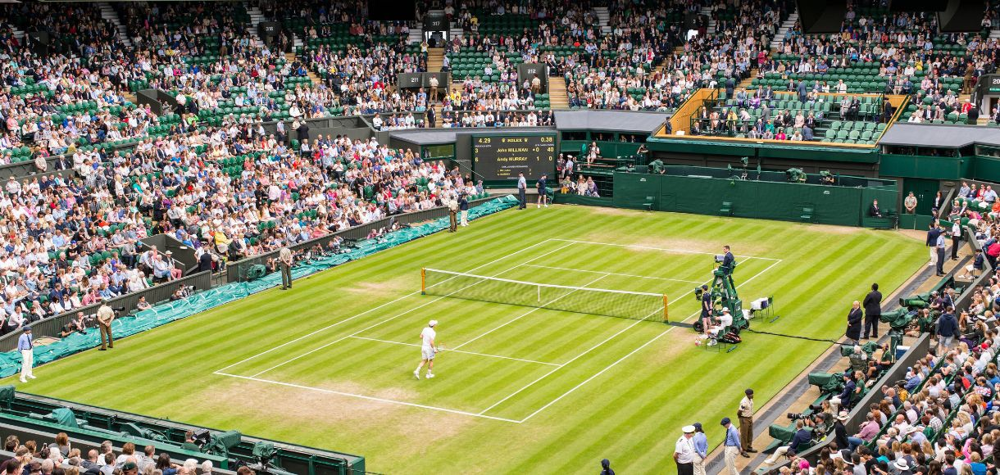

Wimbledon é o torneio de tênis mais antigo e tradicional do mundo. Fundado em 1877 na Inglaterra, é jogado em quadras de grama e faz parte dos quatro torneios do Grand Slam.
O torneio é famoso pela tradição, onde jogadores usam roupas brancas, e pela presença da realeza britânica. Wimbledon é realizado anualmente em Londres, no All England Club.
 Voltar para a Página Principal© 2025 Tennis Club - All rights reserved.